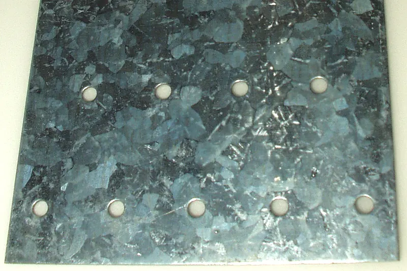
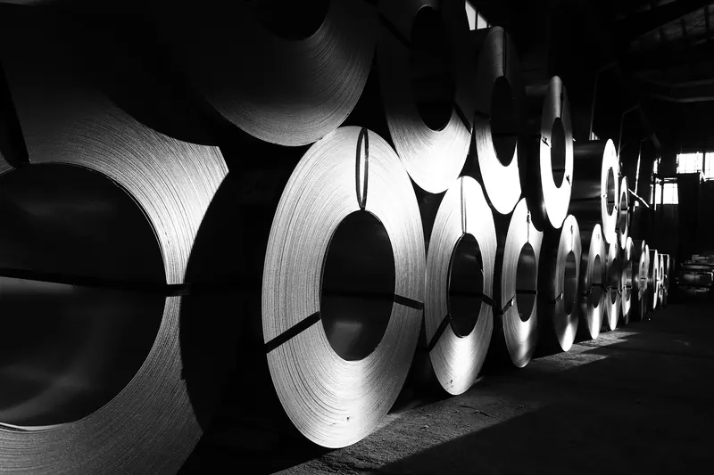
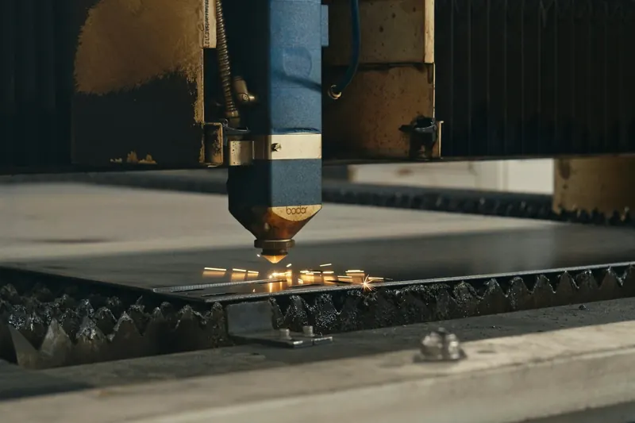

En continu (DX51D+Z)
Couche presque entièrement en zinc pur, avec très peu d'alliage fer-zinc. Selon la HDGASA, elle protège moins les chants découpés, surtout en tôle épaisse à couche fine.
Guide · Matériaux
À la découpe laser d'une tôle galvanisée, le chant se retrouve en acier nu. Rouille-t-il ? Cela dépend de l'épaisseur, du zinc et de l'ambiance. Le zinc des faces protège le chant sur une courte distance ; au-delà, l'oxyde apparaît. Voici ce que disent les sources et comment l'éviter.

La tôle galvanisée (DX51D+Z, EN 10346) arrive avec du zinc sur les deux faces. À la découpe, le chant se retrouve en acier non revêtu : une bande aussi large que l'épaisseur de la tôle. Sur une tôle de 1 mm, le chant exposé mesure 1 mm ; sur une tôle de 3 mm, 3 mm.
À la cisaille, une partie du zinc est entraînée sur le chant. Au laser, non : l'International Zinc Association (IZA) indique que la découpe au disque, à l'abrasif ou au laser ne laisse pas de zinc sur le chant. La protection doit venir du zinc qui reste sur les faces.
Le zinc est plus actif que l'acier. En présence d'humidité, une pile se forme : le zinc se corrode à la place de l'acier et ses produits de corrosion colmatent la zone nue (Galvanizers Association). C'est la protection sacrificielle. Mais elle n'agit que sur une courte distance, et les sources donnent des chiffres différents :
| Source | Donnée | Conditions |
|---|---|---|
| American Galvanizers Association | Jusqu'à 2 mm de large, protection complète | Atmosphère urbaine |
| American Galvanizers Association | Jusqu'à 5 mm de large | Climat industriel et marin |
| V&S Galvanizing | Distance maximale un peu supérieure à 7 mm ; environ 4 mm si la zone nue est large | Essais sur rayures |
| International Zinc Association | Tôle de moins de 1 mm : le chant peut rester sans rouille rouge toute la vie de la pièce | La plupart des ambiances |
| International Zinc Association | Tôle de 2,3 mm : rouille sur le chant au bout de 2 semaines | Exposition atmosphérique |
Les chiffres de l'AGA et de V&S portent sur des rayures et des zones endommagées, pas sur des chants découpés ; ceux de l'IZA, sur des chants de tôle. L'IZA ajoute que la distance protégée augmente avec la conductivité et l'épaisseur du film d'humidité.
Lecture pratique : en tôle fine, le zinc des faces couvre presque tout le chant ; à partir de 2–3 mm et à l'extérieur, il est probable de voir de la rouille sur le chant. L'IZA nuance : sur son échantillon de 2,3 mm, la rouille avait diminué au bout de 6 mois, car les produits de corrosion du zinc avaient fini par recouvrir l'acier.
Structurellement, non. L'IZA est claire : la rouille rouge du chant peut être inacceptable sur le plan esthétique, mais elle ne réduit pas l'intégrité structurelle de la pièce. Le problème est généralement visuel : une ligne brune sur le bord et, avec la pluie, des coulures sur la face galvanisée.
Si la pièce est à l'intérieur, au sec, le chant ne pose normalement pas de problème. Si elle est à l'extérieur et visible, mieux vaut prévoir quelque chose.
La désignation de l'EN 10346 indique les grammes de zinc par mètre carré, deux faces comprises. Plus de zinc, c'est plus de réserve pour protéger le chant : l'IZA signale que la protection s'améliore à mesure qu'augmente le rapport entre surface de zinc et surface d'acier, et l'AGA, que la durée de vie du revêtement est proportionnelle à son épaisseur.
| Désignation | Zinc total (g/m²) | Épaisseur par face (µm) |
|---|---|---|
| Z100 | 100 | 7 |
| Z140 | 140 | 10 |
| Z200 | 200 | 14 |
| Z275 | 275 | 20 |
| Z350 | 350 | 25 |
| Z450 | 450 | 31 |
| Z600 | 600 | 42 |
Source : ArcelorMittal. Dites-nous quel revêtement il vous faut et nous vous confirmons si nous l'avons.
La tôle électrozinguée (+ZE, EN 10152) en porte beaucoup moins : entre 2,5 et 5 µm par face selon ArcelorMittal, et elle est prévue pour l'intérieur. Sur son chant découpé, la protection du zinc est très limitée. Nous les comparons dans galvanisé, électrozingué ou laminé à froid.
La tôle DX51D+Z est galvanisée en continu, en bobine, avant d'être découpée. La galvanisation à chaud au trempé (EN ISO 1461) se fait sur la pièce déjà fabriquée, de sorte que le zinc recouvre aussi les chants.
Couche presque entièrement en zinc pur, avec très peu d'alliage fer-zinc. Selon la HDGASA, elle protège moins les chants découpés, surtout en tôle épaisse à couche fine.
Couche plus épaisse, avec alliage fer-zinc, et chants revêtus. La HDGASA donne des minimums locaux de 35 µm pour l'acier de moins de 1,5 mm et de 70 µm pour l'acier de plus de 6 mm.
Si vous comptez faire galvaniser à chaud vos pièces découpées, tenez compte d'une mise en garde de l'AGA : les chants découpés par des procédés à fort apport d'énergie peuvent durcir et gêner l'accrochage du zinc, avec un risque d'écaillage. Ils sont contrôlés visuellement et réparés selon l'ASTM A780. Parlez-en à votre galvanisateur.
Si vous comptez souder la pièce, la Galvanizers Association recommande d'enlever le zinc sur au moins 25 mm de chaque côté de la soudure, de bien ventiler à cause des fumées d'oxyde de zinc et de réparer la zone ensuite.
Nous ne peignons pas et nous ne plions pas : nous découpons uniquement. Si votre pièce doit être peinte, dites-le-nous dans votre demande et nous le coordonnons à part. Envoyez votre fichier et nous vous répondons en 24 h ouvrées : demandez un devis.
En tôle fine et à l'intérieur, normalement non. En tôle de 2–3 mm ou plus et à l'extérieur, il est probable de voir de la rouille sur le chant, même si le zinc des faces la freine.
Les sources parlent de quelques millimètres : de 2 à 7 mm selon l'ambiance et l'essai. Au-delà, la protection est partielle.
Non. Selon l'International Zinc Association, c'est un problème esthétique, pas structurel.
La découpe laisse le chant sans zinc, comme le disque ou l'abrasif. La protection vient du zinc des faces.
Mis à jour : 28 octobre 2026


Votre interlocuteur est Igor Rodríguez. Écrivez-nous ou appelez du lundi au vendredi, de 7 h à 15 h.